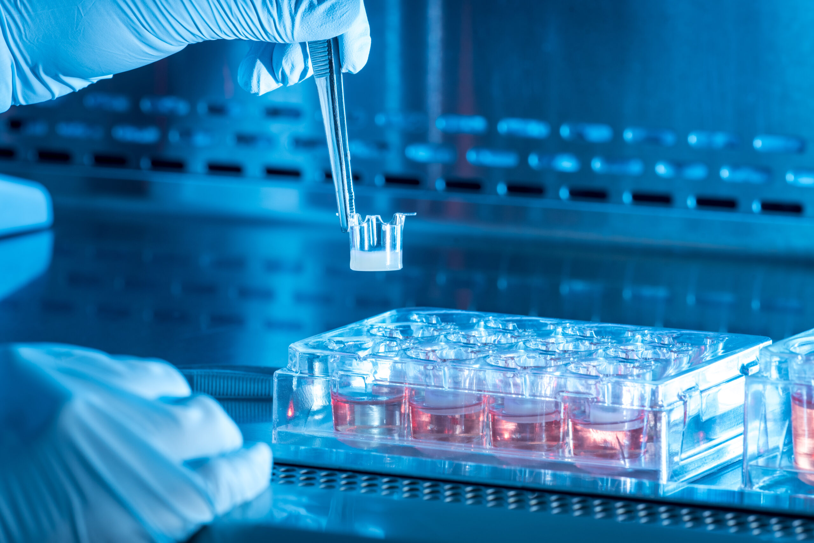

Full-Thickness Architecture
Epidermal and dermal compartments reflecting native human skin.
Labskin-S is a physiologically relevant, full-thickness human skin model designed for efficacy, safety, microbiome and mechanistic research.
Labskin-S is a three-dimensional human skin equivalent containing differentiated epidermal and dermal compartments.
The model closely reflects native human skin architecture and function, making it suitable for efficacy, safety and mechanistic investigations.
Its stratified epidermis, functional barrier and human-derived tissue environment allow researchers to examine interactions between skin, topical treatments and microbial communities.
Labskin-S can also support natural skin microflora or bespoke microbial consortia, enabling controlled host–microbiome studies.

Human-relevant biology with reliable and flexible performance.
Epidermal and dermal compartments reflecting native human skin.
A stratified epidermis with functional barrier properties.
Human cells provide biologically relevant tissue responses.
Supports natural or defined microbial communities.
Suitable for formulations, actives and delivery systems.
Consistent performance across scalable and longitudinal studies.
Labskin-S supports cosmetic, pharmaceutical and skin biology research across a range of human-relevant testing applications.
Labskin-S plates are available for organisations that want to conduct testing within their own laboratory facilities.
Enquire About Plate SupplyEach order includes additional culture plates, culture media and complete instructions for use.
Depending on the application, Labskin-S can remain viable for up to two weeks after receipt when the supplied instructions are followed.
Labskin plates are shipped at ambient temperature, while media is shipped separately at 2–8°C.